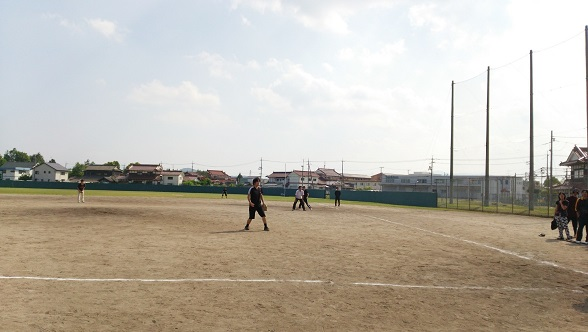

ソフトボール大会（春）
毎年恒例のソフトボール大会。新入生との交流を一気に深める重大イベントだ。 今年は放射光物性研究室と合同で参加し、総勢１１名となった。チーム名は「愉快な久保選手とその仲間たち」。 誰が考えたのか、まさかの二年連続の久保推し。その当人がこの記事を書いていることなど思いもよるまい。当日は絶好の運動日和となった。 午前のリーグ戦、バッティングに苦しみながらも、鉄壁の守りを見せて辛くも勝ち残り、上位トーナメント進出を果たした。 午後の上位トーナメントでは投打がかみ合い、あれよあれよという間に決勝戦までコマを進めた。 決勝の相手は磁性研。午前のリーグ戦では逆転負けをした上に、今年五連覇がかかっている強敵だ。 しかし、今年のチームは強かった。お互い毎回のようにチャンスを作るも堅い守備が得点を許さず、１対１のまま時間切れとなった。 勝負の行方はじゃんけんの三本勝負となった。ここでも両者譲らず、１勝１敗でキャプテン同士の戦いにもつれ込んだ。 そして決着・・・我々は見事に６年ぶりの優勝を飾った。最後は飲み屋でメンバーと健闘を称えあった。

決勝戦の様子。